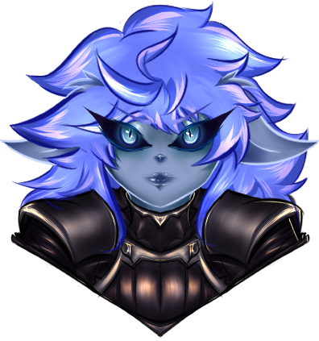

Zeorz’Mary
 |
Descrición: |
Renacidas por la maldición de las tinieblas, criaturas mezcladas entre espíritus y armaduras, estas guerreras adoptan el estilo de las tinieblas. |
Las Zeorz’Mary’s son eruditas del combate, caballeras estrictas y con una magia que las caracteriza. |
Son muy pocas las que componen a la “Senda del metal” y generalmente son vistas como una brisflow extraña, que es capaz de relacionarse sin perder el tacto como las armaduras vivientes y debido a su magia mezclada puede materializar partes de su cuerpo para vestir de gala y no solo como una inmensa armadura de metal. |
Estilo: Duelista. |
Atributos: Flexible, Protector, Evocador. |
Dificultad: ⭐⭐⭐ |
Dificultad de rol: ⭐⭐⭐
|
Requisito de prueba: Exótica
|
Estadísticas de la Zeorz’Mary: |
+1 Letalidad. |
+1 Agilidad. |
+1 Tenacidad. |
Habilidades de la Zeorz’Mary |
🔹Orden🔹 (E/B/🔹🔹🔹) |
Invocas un 🔹Arcano🔹 de los que poseas. |
Puedes incrementar el Acto, de un 🔹Arcano🔹 por medio de este hechizo. |
Alcance: 25’ pies |
Consume 20 de maná 💧. |
🕳️Hueco espiritual🕳️ (G) |
Puedes cambiar de posición con un 🔹Arcano🔹. |
Moverse hasta quedar a melé de un 🔹Arcano🔹 o
Hacer que el 🔹Arcano🔹 vaya hacia ti. |
Si hay un enemigo a 5’pies de tu arcano o de ti en medio del desplazamiento, adquieres ventaja en tu siguiente ataque. |
Consume 10 de maná 💧. |
Solo puede usarse una vez por turno. |
☝️Jurar☝️ (G) |
Juras que un 🔹Arcano🔹 se mantendrá contigo incluso en el siguiente turno. |
Extrapola la duración del 🔹Arcano🔹 a tu próximo turno. |
Consume 50 de maná 💧. |
🛡️Bloqueo🛡️ (R) |
Te proteges del daño entrante. |
Daño bloqueado → 1d4 + C + 2 por nivel. |
Puede lanzarse a un aliado a 15’ pies de ti, esto te acercará al aliado. |
🦶Evasión🦶 (R) |
Gracias a tu magia y habilidad puedes evadir un ataque y moverte 5’ pies. |
Consume 5 de maná 💧. |
Ganas pasivamente (No cuenta como habilidad) Las siguientes pasivas. |
🔹Arcanos Malditos🔹 |
La Zeorz’Mary posee 🔹Arcano🔹, estos debe escogerlos cuando su personaje es creado, puede cambiar dichos arcanos cada que sube de nivel. |
Los 🔹Arcanos🔹 son objetos que te siguen. |
Posee 3 puntos de 🔹Poder arcano🔹 que le permite utilizar habilidades sin consumir acciones ni maná💧. |
Además adquiere de forma pasiva. |
→ 🛡️Armada hasta los dientes🛡️: 2 de 🛡️Armadura🛡️ por nivel. |
→ Cada que inicia tu turno regeneras 20% de tus PG máx. |
🛡️🔹Portón de cripta🔹🛡️ |
Este poderoso escudo podrá darte protección y embestir de fuerza. |
Mientras el escudo esté activo, todo el daño recibido se redirige al escudo. |
En caso de que el escudo se rompa, el daño restante recae sobre la brisflow. |
Acto I: PG → 11 por nivel. |
Acto II: PG → 22 por nivel. |
Acto III: PG → 33 por nivel. |
Si se activa el efecto de 🕳️Hueco espiritual🕳️, puedes empujar 5/7/9 casillas a un enemigo. |
🔪🔹Espadón Templarius🔹🔪 |
Adquieres acceso al ataque de este brutal espadón. |
Acto I: Daño → 1d6 + C + 6 por nivel. |
Acto II: Daño→ 1d6 + C + 9 por nivel. |
Acto III: Daño→ 1d6 + C + 12 por nivel. |
Alcance: 10’. |
Si se activa el efecto de 🕳️Hueco espiritual🕳️, +5/7/10 de inercia al ataque. |
🎌🔹Estandarte de combate🔹🎌 |
Colocas un poderoso estandarte que potencia a todos los aliados de manera significativa. |
Acto I: Daño extra→ 1 por nivel. |
Acto II: Daño extra→ 2 por nivel. |
Acto III: Daño extra→ 3 por nivel. |
Alcance: 15’pies en área. |
Solo 2 jugadores pueden reclamar este beneficio. |
Si se activa el efecto de 🕳️Hueco espiritual🕳️, Te curas un 10% de tus PG máximos. |
🏹🔹Arca de Zeorz’Mary🔹🏹 |
Un arco confiable. |
Acto I: Daño → 1d6 + C + 5 por nivel. |
Acto II: Daño→ 1d6 + C + 7 por nivel. |
Acto III: Daño→ 1d6 + C + 10 por nivel. |
Alcance: 60’pies. |
Si se activa el efecto de 🕳️Hueco espiritual🕳️, Puedes moverte 25’ pies de forma adicional sin recibir ataques de oportunidad. |
🏰🎏🔹La Torre🔹🎏🏰 |
Convoca una torre para añadir precisión a todos los miembros del equipo. |
Acto I: Precisión extra→ 2. |
Acto II: Precisión extra→ 4. |
Acto III: Precisión extra→ 6. |
Alcance: 15’pies en área. |
Si se activa el efecto de 🕳️Hueco espiritual🕳️, El área de efecto se duplica. |
Pasivas seleccionables |
🛡️Caballera virtuosa🛡️(Zeorz’Mary): |
+1 🛡️Armadura🛡️ por nivel. |
+2PG por nivel. |
🔹Arsenal Maldito🔹(Zeorz’Mary): |
Adquieres acceso a un 🔹Arcano🔹 Extra. |
🔹Recuerdos de Zeorz’Heres🔹(Zeorz’Mary): |
Sacrificas un 🔹Arcano🔹 para convertir tu siguiente ataque en uno Letal. |
⚜️Promesa de caballera⚜️(Zeorz’Mary): |
¡Le prometes algo a un jugador!(No puedes ser tu mismo). |
Cada que inicia sesión todos pierden 1 de estrés, aquel al que le has realizado la ⚜️Promesa de caballera⚜️ pierde 2 de estrés. |
⚜️Capa de Caballera⚜️(Zeorz’Mary): |
Cómo gratuita puedes cubrir a alguien con tu manto, Esto le cura un 20% de tus PG máx. |
En caso de estar K.O le da ventaja en una Salvación. |
En caso de poseer ⚜️Promesa de caballera⚜️ sobre dicho jugador, lo revive con un 10% de tus PG máx. |
💧Espiritualidad de Caballera💧(Zeorz’Mary): |
+10 Maná💧. |
+5 Regeneración de maná💧. |
🛡️Protectora🛡️(Zeorz’Mary): |
Fuera de tu turno puedes moverte hasta 20’ pies hacia tus aliados. |
+2PG por nivel. |
❤️Restauración caballerosa❤️ (Zeorz’Mary): |
Regeneración de PG 20% →25% de los PG máx. |
❤️Reconocimiento maldito❤️(Zeorz’Mary): |
+1PG por sesión. |
+3PG por nivel. |
🌼Travesía de caballera🌼(Zeorz’Mary): |
+1CA por nivel. |
🎯Frialdad del metal🎯(Zeorz’Mary): |
+1 a la precisión por nivel. |
🎯Letalidad del metal🎯(Zeorz’Mary): |
+15% probabilidad crítica. |
🎯Recreación del metal🎯(Zeorz’Mary): |
Tus golpes críticos te devuelven 5 de maná💧. |
🎯🔥Ira del metal🔥🎯(Zeorz’Mary) |
Tus 🎯Críticos🎯 Adquieren 3 de daño por nivel adicional. |
 |
Novela
|
Novela